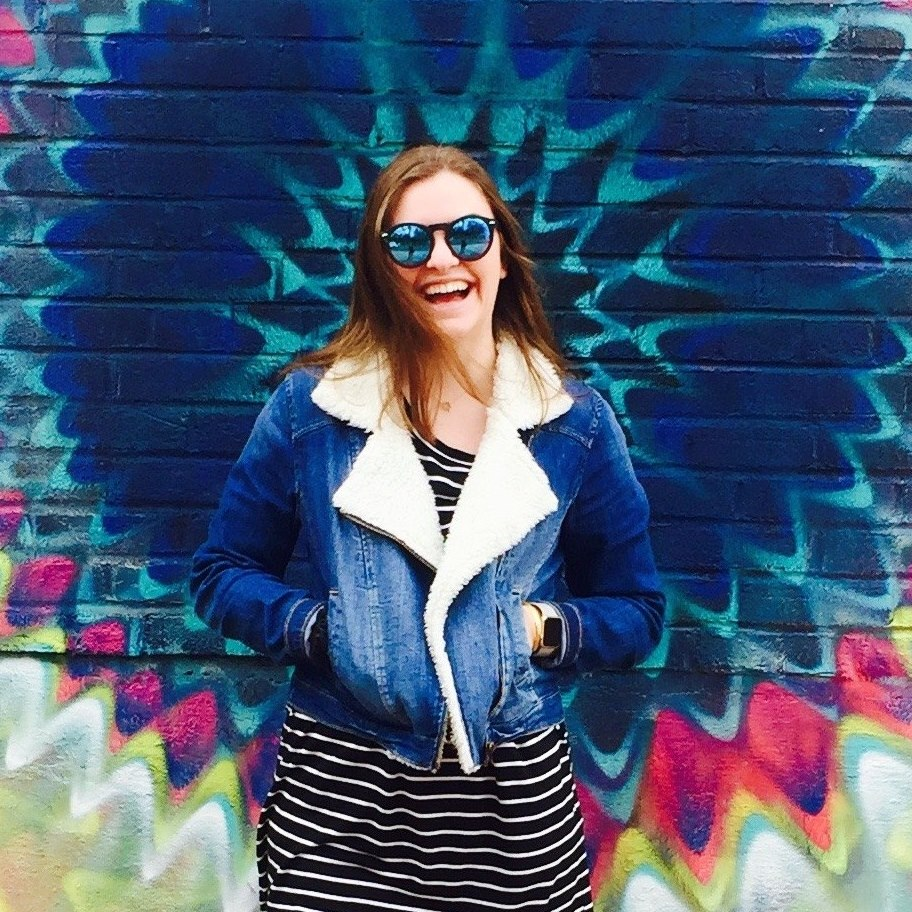

| Who I Am. |
My name is Ashley Evans and I am a rising junior at the University of Georgia! I aspire to serve people and love people with my whole heart! I am studying Communications and Psychology here at the University of Georgia, in hopes of one day working in a nonprofit! On this web page, personally designed by me, you will find a rough outline of my resume, containing my schooling and my experience. This webpage also contains all contact information needed if you would like to contact me! You will also be able to click on a link that will direct you to another page that describes five fun facts about myself! One of my favorite things to talk about in an interview is my work experience. I have never had a job that I do not love! In high school, I used to play competitive tennis in hopes of going to college on a tennis scholarship. However, I stopped enjoying tennis, and decided it was best for me to stop playing competitively. Soon after I stopped playing tennis, my parents hounded me about getting a job after school instead of sitting on my couch all afternoon. This super fun, casual restaurant across the street from my neighborhood was hiring high school students like me, so I decided to apply. Thankfully I got the job right on the spot and started training soon after! I was a waitress for about three years at this restaurant! Waitressing is one of my favorite things to do! It gives you an opportunity to engage new people in a way that they usually haven't experienced before. We all know of horrible, scaring experiences we have had at restaurants where our waiter/waitress was horrible! I tried to be the opposite when customers came in! I wanted everyone to have the best experience at Sidney's Pizza Parlor! Waitressing taught me an enormous amount about customer service, learning how to listen, being able to forgive people even when they were the ones that had messed up. Waitressing isn't just about collecting the tips at the end of the night, waitressing taught me life long skills that molded me into a better person; the person I am today! I currently waitress at a new restaurant since Sidney's Pizza Parlor closed in early January of 2016! This past summer I had the opportunity to get hands on experience working at a nonprofit. The nonprofit I had the chance to work for is called Lighthouse Family Retreat! Lighthouse Family Retreat is an organization that provides families who have a child going through childhood cancer, to escape to the beach for a week, where the families are no longer bound to a hospital bed and uncomfortable chairs, instead they have the whole ocean looking directly at them! While I was working for Lighthouse, I had the opportunity to be in charge of the kitchen! Being in charge of the kitchen meant organizing and planning catering meals for 2 out of the 3 meals served each day for over 150 people. Being in the kitchen also meant buying a large sum of groceries from the store and having several employees help you cart out the groceries and load them into your car. This job not only taught me my way around the kitchen, but it taught me a lot about life. We don't get to choose cancer, cancer chooses us, but we do get the opportunity to choose how we battle our cancer, physically and emotionally. Witnessing these families battle childhood cancer was one of the hardest things I will ever have to watch, however these families also illustrated a joy I had never seen before. The exuded joy, love, and kidness, even when life had thrown a curveball at them. Thankfully, this past summer won't be by only experience with Lighthouse. This summer I get the opportunity to serve with Lighthouse again, and I couldn't be more stoked! "Chemotherapy, surgery, prayer and faither healed our son - Lighthouse helped heal our family." -Phil Hennessey, Retreat Dad |
|---|---|
| What I Look Like. |

|